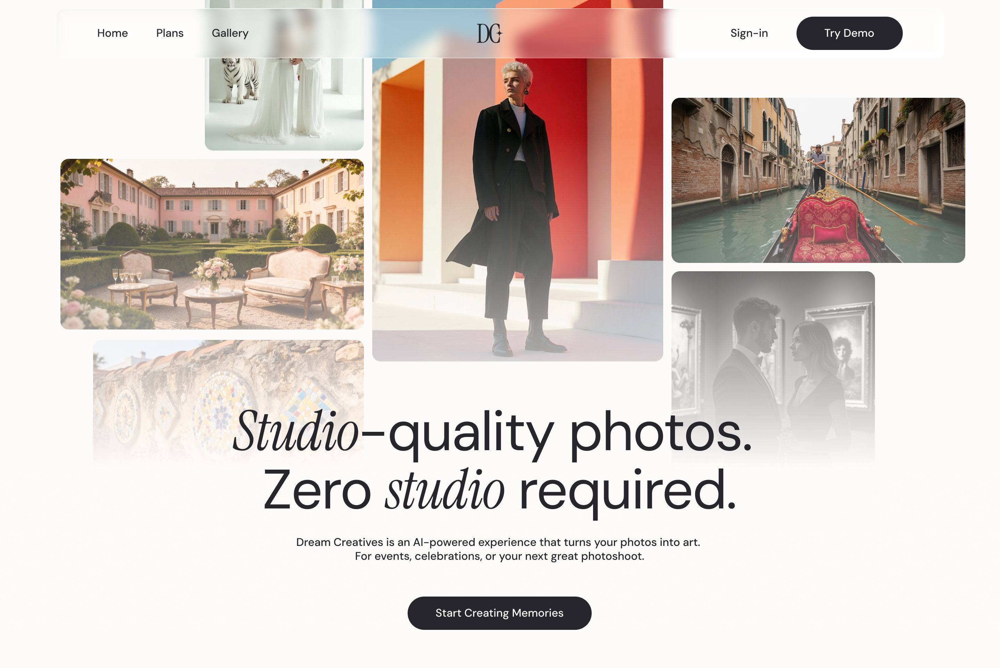
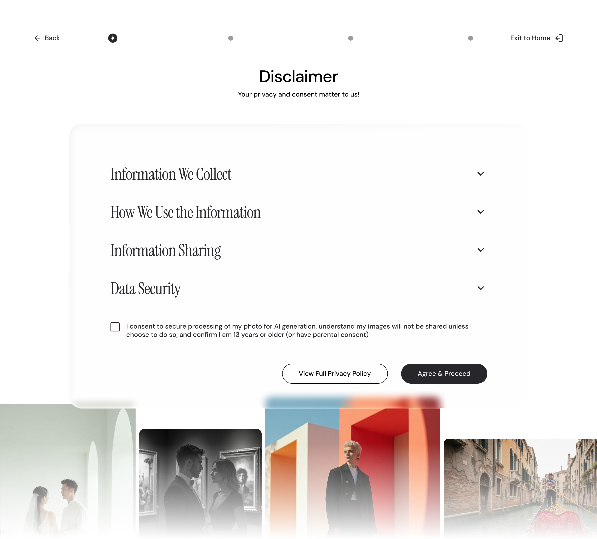
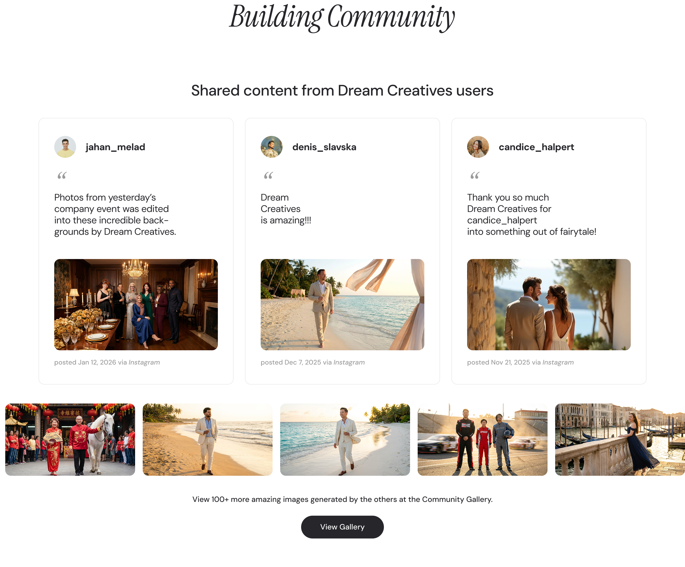

PRODUCT DESIGN · 2026 · FLUI DESIGN JAM
Dream Creatives – 1st Place Project of FLUI 2026

LATEST UPDATE
Following FLUI Design Jam, Dream Creatives adopted our designs nearly in full, and the redesigned experience is now live on their website.
Project Details
Timeline
February 2026
3 Day Design Jam
My Role
Project Manager
Organizer
Product Designer
Tools Used
Figma
FigJam
CapCut
Collaborators
Gia Lotfi-Pour
Ubin Jung
Hidayat Patil
Project Overview
Dream Creatives offers AI-powered virtual photo booths that turn traditional photo ops into immersive, branded experiences. During FLUI Design Jam 2026, our team was assigned to redesign their homepage and user flow. The brief was simple: be clear, build credibility, and earn trust.
The Problem
Dream Creatives’ existing site was built for a kiosk, not the web. On desktop, visitors had no clear understanding of what the product was, whether it was legitimate, or what to do next. We needed to redesign the experience so new users could quickly understand, trust, and move forward.
Our Approach
We started by auditing the existing site as first-time visitors, not designers. Within minutes we were lost, and that was the insight we needed. From there we mapped the broken flow before touching Figma, because solving the wrong problem faster isn’t progress.

Initial audit of the existing kiosk-built experience
Early flow mapping, sketches, low-fidelity wireframes, and mid-fidelity wireframes identifying
Methods
Heuristic review, user flow mapping, low-to-high fidelity wireframes.
Constraints
3 Day Design Jam, remote collaboration, and no direct access to users.
Before we jumped into solutions, we spent time understanding where the experience was actually breaking: where visitors lost context, hesitated around trust, or didn’t know what to do next.
That work led us to frame the rest of the project around three focus areas: clarity, credibility, and community, which shaped the homepage, disclaimer, pricing, and gallery flows you’ll see in the challenges below.
Challenge 01
Clarify the Product Experience
The Challenge
The Why Behind the What
We redesigned the homepage with a scrollable layout, clear navigation, and a flow that naturally moves visitors from “what is this?” to “I want to try it.”

Homepage redesign with scrollable layout and new design system
Challenge 02
Build Trust & Credibility
The Challenge
The Why Behind the What
We added a dedicated disclaimer page so visitors understand exactly how their photos are used and protected. We introduced a trust bar and testimonials to reinforce real-world credibility. We also built out a pricing page with an FAQ so there are no surprises. We could have stopped at testimonials, but that wouldn’t have addressed the real hesitation. So we went upstream and made the data policy impossible to miss.

Disclaimer page and trust bar: making data policy impossible to miss
Pricing and FAQ page: removing uncertainty before it became a reason to leave
Challenge 03
Build a Community
The Challenge
The Why Behind the What
The easy answer was a social media feed embed. We pushed for a native gallery instead because we wanted the community to live inside the product, not point away from it. We revamped the public photo gallery so visitors can share and browse publicly, and added new CTAs and social proof touchpoints on the homepage to surface the community more prominently.

Revamped community gallery: keeping sharing inside the product, not pointing away from it
Final Thoughts

A 3 day design jam forces clarity. We were designing for a product we’d never used, for users we couldn’t interview, so we started by mapping what was actually broken rather than jumping to solutions.
On the whole, the experience was exhausting but rewarding. I took on the project manager role and got to work with a team I didn’t know going in. Figuring out how we communicated, what we each needed, and how to keep things moving in a short window was a big part of the challenge. Collaborating with an unfamiliar group under that kind of time pressure was intense, but it was also a lot of fun. I’m really proud of my teammates and the work we created.
If I came back to the project, I’d push further on the community layer. We built solid groundwork, but with more time I’d want to explore what the experience feels like for a returning user and how the gallery and sharing flows could feel more woven into the product.
If you’d like to hear more about the project and the experience, I’d love for you to reach out. You can also watch our video submission here, and if you’d like to see what FLUI is, here’s the link to their LinkedIn.